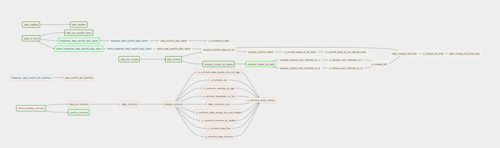

As mentioned in the “Examples” section, schemas need to be added via sc::add_schema and tasks need to be added via sc::add_task. It is easiest to create a new R package (e.g. sykdomspulsen) and include all schema/task creation code in an onAttach function (http://r-pkgs.had.co.nz/r.html), which means that any sykdomspulsen:: call will automatically have all schema/task creation code run automatically.
We then create a function sykdomspulsen::tm_run_task which is a wrapper around sc::tm_run_task, with all schema/task creation code run automatically.
This means that we can then run tasks from the console (outside of R):
RScript -e 'sykdomspulsen::tm_run_task("example_data")'We recommend using https://airflow.apache.org/ to orchestrate tasks.
Here is an example workflow, with each task represented as a rectangle.
